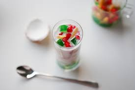

Che Thai Recipe

Chè Thái is a traditional Vietnamese sweet dessert drink made with coconut milk, jellies, and various tropical fruits.
Recipe based on (Hungry) Huy Vu's Chè Thái Recipe
Ingredients
- Coconut Milk
- Coconut (separate juice and meat)
- Jackfruit
- Lychee
- Longan
- Ai-yu jelly
- Water chestnut
- Red food coloring
- Tapioca starch
- Water
- Ice
Steps
(Optional) "Red Rubies"
You can experiment with other ingredients such as water chestnuts, grass jelly, tapioca balls, etc.
- Open the water chestnut can and drain.
- Cut the water chestnuts into 1/4 inch pieces and place in a large boat.
- Add just enough red food coloring to the water chestnuts for them to take on a red color
- Add 1 cup of tapioca starch to the bowl to cover all the water chestnuts evenly.
Take care not to use too much starch.
- Boil a pot of water over medium-high heat. Add the water chestnuts in small batches and stir to prevent sticking.
Each batch, when the chestnuts float to the top, remove them from the boiling water and put them in ice water, stirring to prevent sticking.
- Keep all water chestnuts in the ice water for at least 10 minutes.
Main Drink
- Open all the canned fruits (jackfruit, lychee, longan, ai-yu).
Save the syrup from the lychee can in a separate container.
- Cut jackfruit and lychee into slices. Combine all fruits into a large container.
(Optional) Combine the water chestnuts from "Red Rubies" as well.
- In another container, combine coconut milk and coconut juice. In
this same container, slowly add the lychee syrip to sweeten the milk to your liking.
- Add the sweetened coconut milk, coconut juice, and coconut meat into the container
containing the fruits and stir.
- Keep the che Thai cold by refrigerating it or adding crushed ice.